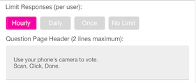
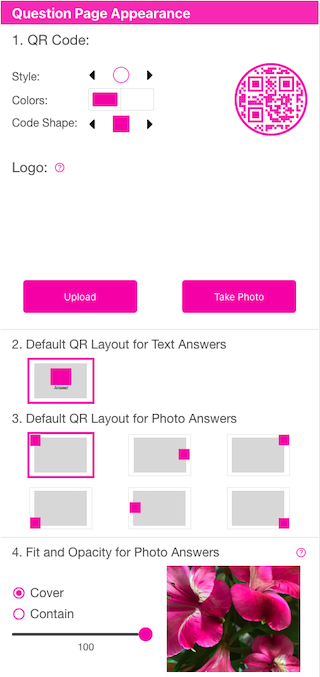
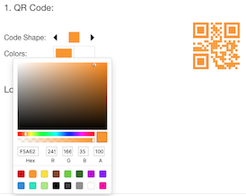
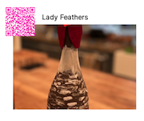
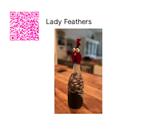
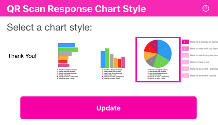

Configure Options
This section allows you to choose many different options for your contest - from frequency of voting to how to display the output PDF or PNG files. We’ll look at each section by section. Be sure to press the button at the bottom to save your changes.
General Options

Limit Responses (per user) - This determines how many times a voter (someone who scans the QR code) can vote. The default is Once. This will allow a person to have just one vote that counts. They can change votes by scanning another one, but that will cancel their first vote. You may also choose:
Hourly - can vote one time per hour
Daily - can vote one time per day
Once - (default) can vote one time only
No Limit - can vote as many times as they want
How do you limit votes? - When a voter scans the QR code, the app will drop a cookie in the voter’s browser. The voter has to have cookies enabled, or they may not vote. The cookie does not identify the voter, it just records the fact that they voted.
Question Page Header (2 lines maximum) - This text will appear at the top of the generated PDF file. It will not show on a PNG image if you choose that output option later. The text should help the voter understand what they are supposed to do. The default of Use your phone’s camera to vote. Scan, Click, Done. is an example. You may put anything you like there - but it has a maximum of 2 lines.
Question Page Appearance

1. QR Code - You may choose the outer Code Style (circle, square), internal Code Shape and foreground and background colors of the QR code that is generated for your answers. The default internal Code Shape is a square, but there are many options. Press the left and right arrow buttons to choose your code. You should be sure to try your choice out at the size you print so you can verify the code will scan. You can choose the colors of the QR code by clicking on the foreground (left box) and background (right box) color boxes.

Logo - Optionally, you may add a logo that gets printed on the lower left of the generated PDF - it will not show up if you choose PNG output. You may an image from your device, or you can if your device supports it.
Make sure if you alter any values in this section, you need to scroll down and press the button.
2. Default QR Layout for Text Answers - Currently, there is no choice here. If your answers are text-only (vs photo or photo + text), then they will print with the QR code above the text of the answer.
3. Default QR Layout for Photo Answers - The images show the layout of the QR code (shown in color) vs. the image (shown in grey). For example, the first one shows the QR code in the upper left (default) and the image behind and to the right of it. You may choose the position of the QR code by selecting one of the 6 choices. The below image shows how this is printed when you have image answers with answer text in a PDF.

4. Fit and Opacity for Photo Answers - You may choose how photos are scaled into the viewable area by selecting Cover or Contain. Cover means that the photo will comletely fill the static rectangle area of the destination (like the image above). Contain will scale the photo proportionately keeping its aspect ratio into the destination rectangle - so that you see the whole photo (below).

Opacity can be controlled by moving the slider left or right. By default, the photo will completely overwrite whatever is under it. For example, on PNG files, it is possible to make the background of the screen a color (say blue) and then change the opacity of the photo so that the background ‘bleeds through’ the photo. You can play with this to see the effects it has in the varying output formats.
QR Scan Response Chart Style

Select chart style - After the user scans an answer, they are redirected to a page that will show them a “Thank You” page, a pie chart or a gradient chart. The “Thank You” page will not display any results. Both of the other chart types will display the results of prior votes and the current user’s vote. You may pick which type of page is displayed here (pie or gradient). Also, you may skip the results page by specifying a Link Url and Automatic Redirect under the Optional Answer Link when you edit each Answer under the Edit Answer screen.